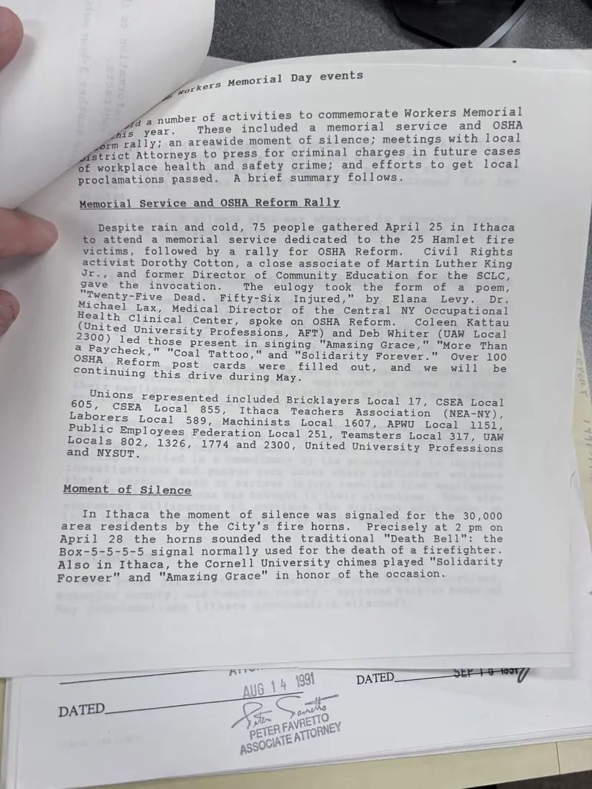
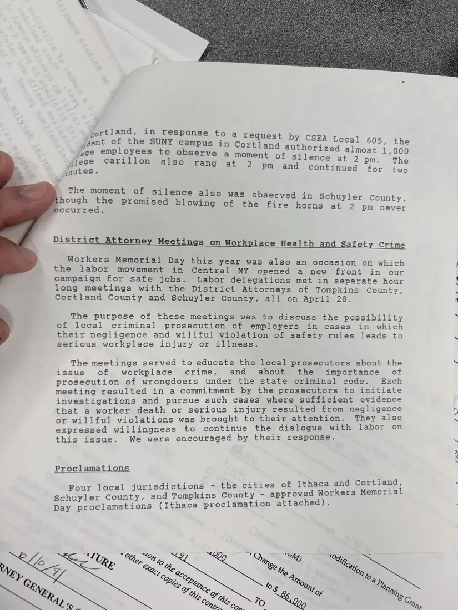

Report, 2 pages
Workers Memorial Day events report, April 1992
April 1992Date inferred
A memorial service and OSHA reform rally in Ithaca on April 25 attended by 75 people and dedicated to the 25 victims of the Hamlet, North Carolina, poultry plant fire; a moment of silence at 2 p.m. on April 28, signaled by the City of Ithaca's fire horns and the Cornell chimes; meetings with the district attorneys of Tompkins, Cortland, and Schuyler counties about prosecuting workplace safety crimes; and Workers Memorial Day proclamations by four local governments.
The year is inferred from the 1991–92 annual report and the Hamlet fire of September 1991.
Download or cite this itemPages


(open zoom view)Read the page text (machine-read, contains errors)
This text was generated automatically from the photograph and has not been corrected. The image is the authoritative record.
y events ers Memorial Da work a number of activities to commemorate Workers Memorial year. These included a memorial service and OSHA e moment of silence; meetings with local fm rally; an areawid fs 7 trict Attorneys to press for criminal charges in future cases Mecoriplace health and safety crime; and efforts to get local proclamations passed. A brief summary follows. Memorial Service and OSHA Reform Rally "Despite rain and cold, 75 people gathered April 25 in Ithaca to attend a memorial service dedicated to the 25 Hamlet fire victims, followed by a rally for OSHA Reform. Civil Rights activist Dorothy Cotton, a close associate of Martin Luther King Jr., and former Director of Community Education for the SCLC, gave the invocation. The eulogy took the form of a poem, Bs re eere VE Dead. Pifty-Six, inguned,;'.. by, Elana: glevy. Dre fester Medical Director of the Central NY Occupational Bontices segs ear ee eee: spoke on OSHA Reform. Coleen Kattau 2300) Peg eee wae Professions, AFT) and Deb Whiter (UAW Local . Sage se present in singing ‘Amazing Grace," "More Than BSHAT Reto. m Coal Tattoo," and "Solidarity Forever." Over 100 continuing Side, aimee ameletGa hall ed out, and we will be Uni ; per mene represented included Bricklayers Local 17, CSEA Local ’ Local 855, Ithaca Teachers Association (NEA-NY), L nah Be Cre rs Local 589, Machinists Local 1607, APWU Local 1151, = eee eevee Federation Local 251, Teamsters Local 317, UAW = eI Te esitaie 326, 1774 and 2300, United University Professions _ Moment of Silence In Ithaca the moment of silence was signaled for the 30,000 area residents by the City's fire horns. Precisely at 2 pm on April 28 the horns sounded the traditional "Death Bell": the Box-5-5-5-5 signal normally used for the death of a firefighter. Also in Ithaca, the Cornell University chimes played "Solidarity Forever" and "Amazing Grace" in honor of the occasion. ig Wed tat - tO, DATED AU ae


(open zoom view)Read the page text (machine-read, mostly readable)
This text was generated automatically from the photograph and has not been corrected. The image is the authoritative record.
yortland, in response to a request jaent of the SUNY campus in Cortland yege employees to observe a moment of sile ylege carillon also rang at 2 pm and c gnutes. by CSEA Local 605, the authorized almost 1,000 nee at 2 pm. The ontinued for two The moment of silence also was observed in Schuyler County hough the promised blowing of the fj ccurred. = e fire horns at 2 pm never District Attorney Meetings on Workplace Health and Safety Crime Workers Memorial Day this year was also an occasion on which the labor movement in Central NY opened a new front in our campaign for safe jobs. Labor delegations met in separate hour long meetings with the District Attorneys of Tompkins County, Cortland County and Schuyler County, all on April 28. The purpose of these meetings was to discuss the possibility of local criminal prosecution of employers in cases in which their negligence and willful violation of safety rules leads to serious workplace injury or illness. The meetings served to educate the local prosecutors about the issue of workplace crime, and about the importance of prosecution of wrongdoers under the state criminal code. Each meeting resulted in a commitment by the prosecutors to initiate investigations and pursue such cases where sufficient evidence that a worker death or serious injury resulted from negligence or willful violations was brought to their attention. They also expressed willingness to continue the dialogue with labor on this issue. We were encouraged by their response. Proclamations - the cities of Ithaca and Cortland, d Workers Memorial proclamation attached). Four local jurisdictions Schuyler County, and Tompkins County - approve Day proclamations (Ithaca Oy Beare ay VERN ess pega ff
See something wrong, or recognize a person or event? Send a correction. If you hold rights in this item or think it should not be public, write to the same address.